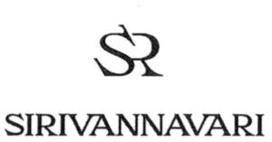

Trade Mark Journal No.2025/043 24 October 2025
WO0000001863448 (3,4,9,14,18,21,24,25,26,35)
Office of origin: Thailand
Date of International Registration:23 April 2025
Date of designation in the UK:
23 April 2025

- Class 3
- Fragrance refills for non-electric room fragrance dispensers; foot deodorant spray; soap; lotions for cosmetic purposes; cosmetic creams for skin care; sun creams; air fragrance reed diffusers; body glitter; lipsticks; lip balm; skin masks; perfumes; oils for cleaning purposes; serums for cosmetic purposes; shampoos; hair conditioners.
- Class 4
- Scented candles; candles.
- Class 9
- Eyeglass cases; sunglasses; carrying cases for cellular phones.
- Class 14
- Cameos [jewelry]; scarf clips being jewelry; jewelry clips for adapting pierced earrings to clip-on earrings; pearls [jewelry]; pins [jewelry]; bangles; brooches [jewelry]; earrings; rings [jewelry]; necklaces [jewelry]; bracelets [jewelry]; lockets [jewelry]; amberoid pendants being jewellery.
- Class 18
- Wristlet bags; leads for animals; clothing for animals; collars for animals; briefcases; haversacks; purses; carrying bags; evening bags; waist bags; clutch bags; barrel bags; bum bags; card wallets; tote bags; attache cases; handbags; knitted bags; satchels.
- Class 21
- Cups; ceramics for household purposes; bowls [basins]; vases; water bottles; drinking glasses; mugs; dishes; saucers; table plates; coffee services [tableware]; table centrepieces [ornaments] made of ceramic.
- Class 24
- Coasters of textile; place mats of textile; tablemats of textile.
- Class 25
- Polo shirts; swimsuits; socks; high-heeled shoes; flat shoes; women's shoes; boots; ballet shoes; pants (Am.); dress; scarfs; neckties; belts [clothing]; hats; bath robes; tank tops; sandals; shoes; gloves [clothing]; veils [clothing]; sashes for wear; bustiers; jackets [clothing]; gabardines [clothing]; skirts; jeans; suits; tee-shirts; shirts; shorts.
- Class 26
- Hair bands; hair pins; bows for the hair; buttons; hair ties; hair grips.
- Class 35
- Retail services for furniture; retail store services relating to jewelry; retail and wholesale services for cosmetics; retail and wholesale services for clothing; commercial administration of the licensing of the goods and services of others; outsourced administrative management for companies; advertising; marketing; negotiation and conclusion of commercial transactions for third parties; business intermediary services relating to the matching of potential private investors with entrepreneurs needing funding; organization of fashion shows for promotional purposes.
H.R.H. Princess Sirivannavari Nariratana Rajakanya
Representative: Humphreys & Co., 14 King Street Bristol BS1 4EF UNITED KINGDOM